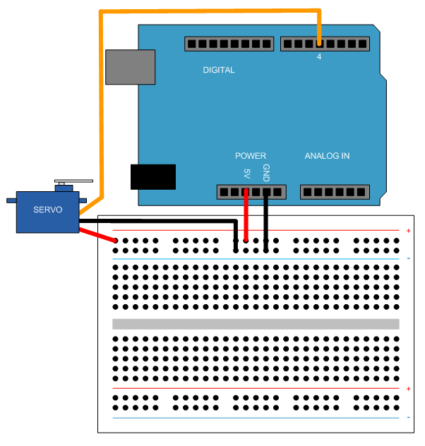

Control Servo Motors
This example shows how to use the MATLAB® Support Package for Arduino® Hardware to control a hobby servo motor.
Contents
Hardware setup
- Connect an FS5106B servo motor to Arduino hardware,
1. Connect the power wire (usually red) to the 5V pin.
2. Connect the ground wire (usually black) to the ground pin.
3. Connect the signal wire (usually orange) to digital pin 4.

Create servo object and calibrate the motor
Create an arduino object and include the Servo library.
a = arduino();
Or, you can explicitly specify it in the Libraries Name-Value pair at creation of arduino object.
a = arduino('com22', 'uno', 'Libraries', 'Servo');
Create a Servo object.
s = servo(a, 4)
s =
Servo with properties:
Pins: 4
MinPulseDuration: 5.44e-04 (s)
MaxPulseDuration: 2.40e-03 (s)
Check your servo motor's data sheet pulse width range values to calibrate the motor to rotate in expected range. This example uses 700*10^6 and 2300*10^-6 for the motor to move from 0 to 180 degrees.
clear s; s = servo(a, 4, 'MinPulseDuration', 700*10^-6, 'MaxPulseDuration', 2300*10^-6)
s =
Servo with properties:
Pins: 4
MinPulseDuration: 7.00e-04 (s)
MaxPulseDuration: 2.30e-03 (s)
Write and read Servo position
Change the shaft position of the servo motor from 0(minimum) to 1(maximum) with 0.2, e.g 36 degrees, increment. Display the current position each time the position changes.
for angle = 0:0.2:1 writePosition(s, angle); current_pos = readPosition(s); current_pos = current_pos*180; fprintf('Current motor position is %d degrees\n', current_pos); pause(2); end
Current motor position is 0 degrees Current motor position is 36 degrees Current motor position is 72 degrees Current motor position is 108 degrees Current motor position is 144 degrees Current motor position is 180 degrees
Clean up
Once the connection is no longer needed, clear the associate object.
clear s a